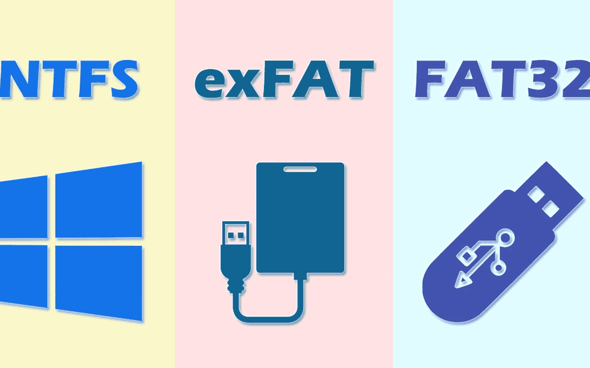
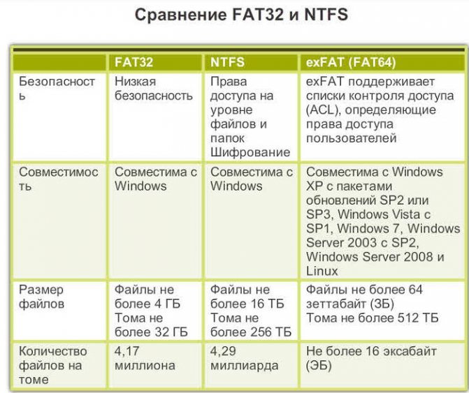

Выбор файловой системы

Файл - именованная область данных на носителе информации, используемая как базовый объект взаимодействия с данными в операционных системах.
Файловая система - порядок, определяющий способ организации, хранения и именования данных на носителях информации в компьютерах, а также в другом электронном оборудовании: цифровых фотоаппаратах, мобильных телефонах и т. п.
NTFS
NTFS - лучше всего использовать в томах объемом около 400 МБ или более. Это происходит потому, что производительность в NTFS не снижается, как в FAT, при больших размерах томов. работа на дисках большого объема происходит эффективно. Не рекомендуется использовать NTFS для тома размером менее 400 МБ из-за объема пространства, используемого в NTFS. Это пространство используется в виде системных файлов NTFS, которые обычно используют не менее 4 МБ дискового пространства в секции 100 МБ. NTFS не совместима с большинством других операционных систем, так как она была разработана под требования ОС Windows. С ней отлично работают все версии операционной системы от Microsoft начиная с XP и заканчивая последней на сегодняшний день Windows 11, но вот другие ОС имеют значительные ограничения при работе с ней.
exFAT
exFAT - проприетарная файловая система, предназначенная главным образом для флэш-накопителей. Впервые представлена фирмой Microsoft для встроенных устройств в Windows Embedded CE 6.0. Размер кластера по умолчанию для файловой системы exFAT составляет от 4 КБ до 128 КБ в зависимости от размера тома, максимальный допустимый по спецификации — 32 МБ.
FAT32
FAT32 - устройства с файловой системой FAT32 являются наиболее универсальными и совместимы со всеми версиями операционных систем Windows, Mac OS, Linux, любыми игровыми консолями и в общем практически всем, что имеет USB порт.

Рекомендации
- Преимуществом файловой системы NTFS является размер файлов. Но NTFS также может предложить
больше в плане безопасности данных. Пользователям и группам пользователей могут быть даны разрешения
на чтение, запись или выполнение дисков, папок или файлов.